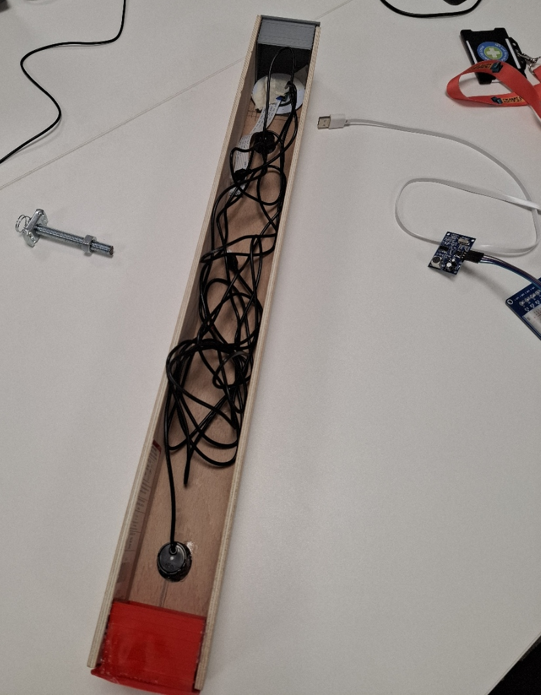
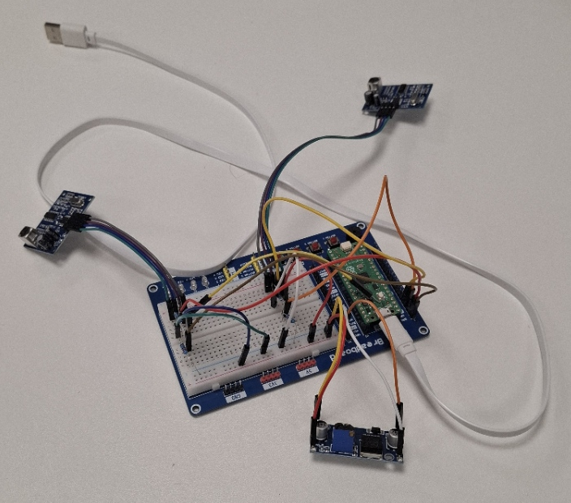
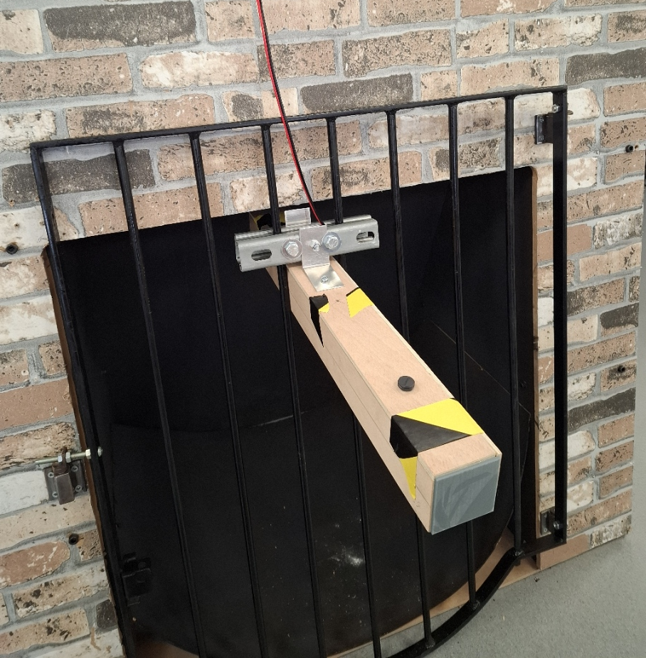

The 21st Century Engineer
Module Overview
This module was an introduction to engineering. As part of this, it covered the different engineering disciplines and professional roles. It focused on core technical skills like CAD, metrology and programming while also emphasising accuracy, ethics, standardisation and industrial communication.
For this module, we had to produce the following:
- A blog post about sustainability within manufacturing
- A functional specification for a fruit sorting machine
- An engineering artifact for a client (Network Rail)
Engineering Artifact - Water Monitoring System
For the engineering artefact, we were placed into teams, and I was given the role of the team’s communications lead. The client, Network Rail, then set us a problem. The task was to design a culvert blockage detection and warning system to identify when a blockage was restricting water flow. Network Rail currently have the issue of having to rely on cameras and site inspections to check culverts, which can lead to flooding that affects the railway track. Because of this, the client wanted a cost effective, low maintenance sensor system that could work in hard to reach areas and under harsh conditions. The system also needed to provide real time data and clear warning messages.

The system we designed needed to be mountable to the majority of culverts using adjustable brackets. It also needed to be tough against water and impacts, able to last a long time without much maintenance, easy long lasting power solution. It would also need to send simple warning messages and allow easy access to real time data. To achieve this, our team decided to monitor the water levels before and after the culvert. If there was a noticeable difference between the two levels, this would indicate a blockage. Ideally, a second method would be used to confirm this, such as a high level water switch. We also discussed having a website that could show live water levels, along with an email or text message warning system.
After several meetings and discussions with the client, the final idea we came up with was to use two ultrasonic sensors, one positioned before the culvert and one within. These would be connected to a Raspberry Pi , which would compare the water levels. If the difference was above a set limit, a camera with an LED light would take a photo of the culvert. An email would then be sent to Network Rail to warn them of the blockage. The system would be enclosed inside a sealed plastic pipe to provide protection and waterproofing. A vent plug would be used to allow pressure equalisation. Power would be supplied using a trackside power cable connected to a step down transformer.

As a team, we created a final design for our prototype and ordered the required parts. The following week, we started the production of the prototype; however, we had to make some last minute changes to the design. The plastic piping did not arrive on time, so we used wood instead. We were also unable to obtain a suitable Raspberry Pi 5, so we used a Raspberry Pi Pico instead. As this was only a prototype, it was powered using a laptop. Our final prototype consisted of a square wooden case with 3D printed end caps and a vent plug. The attachment bracket included two adjustable metal brackets, allowing it to be mounted onto a wide range of bars. The camera and LED light were placed inside the case, with a hole cut and sealed using clear acrylic. The two ultrasonic sensors were then positioned and glued into place, after which the code was uploaded to the Pico.


We then showed the prototype to the client and took their feedback. As part of our reflection as a team, we decided that future iterations of the design should focus on making the system easier to attach to culverts and more robust against harsh environmental conditions. We also agreed that parts should be ordered earlier in the project and that the correct components should be sourced to fully carry out the design of our system. Overall, the prototype was a success.
